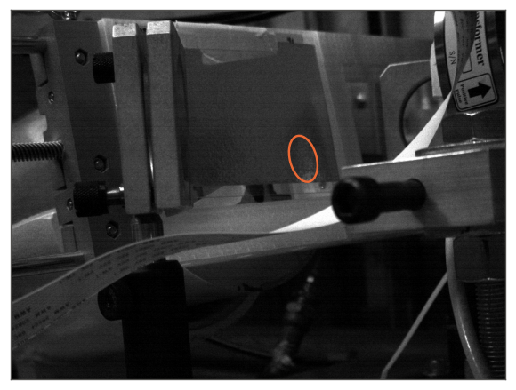
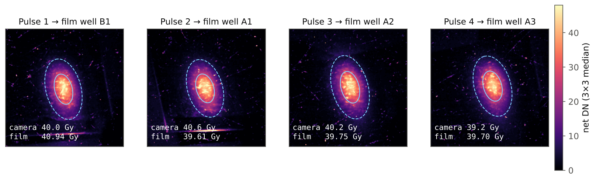
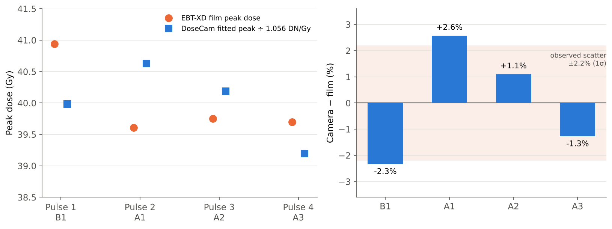

Per-pulse beam imaging for the FLASH sample rig — first comparison with film
Duke FEL Lab · Linac low-energy spectrometer, ~30 MeV electrons · Nov 2026
Data: 13 Oct 2026, run PolyAlDosCal_…_000006 (4 pulses) · Film: EBT-XD, read out by J. Sherman

Targeting frame (1 ms gate, room light). Orange: where the beam spot lands on the target plate.


Single dose level, zero intercept assumed; frame→well order (B1, A1, A2, A3) is the recorded order, not yet independently confirmed.
| Source (per pulse, 1σ) | Size | Comment |
|---|---|---|
| Film — B row vs A row offset | +3.4 % | B1, B2 both high; scanner lateral response or real — explains most of B1's −2.3 % |
| Film — window-peak noise | 0.2–0.5 % | 1.9–2.4 % per pixel; A1–A3 agree to 0.18 % |
| Film — absolute (~40 Gy) | ~3 % | common to all wells → moves the calibration, not the scatter |
| Target — Al tape / PC non-uniformity | 0.5–2 %? | pixel-scale light structure ~10 % rms that does not repeat pulse to pulse |
| Analysis — hit masking, fit choice | ~1 % | mostly common-mode; amplitude shifts 1–2 % between mask thresholds |
| Camera — read noise + sensor hits | 0.2–0.4 % | fit statistical error from residuals |
| Camera — photon statistics | 0.1–0.25 % | next slide |
| Gate timing | ≪ 0.5 % | light well inside the gate |
Film can account for B1 but not the A row (film flat to 0.2 %, camera 1.8 %, falling as the spot drifts). The leftover ~1.8 % is target + analysis, not the camera's noise floor.
| Measured over | Photo-e⁻ | Shot noise |
|---|---|---|
| Peak pixel (42 DN) | 90–420 | 5–11 % |
| 10 × 10 px window | 0.9–4 × 10⁴ | 0.5–1.1 % |
| Whole spot (1.8 × 10⁵ DN) | 0.4–1.8 × 10⁶ | 0.07–0.17 % |
| Fitted peak (free shape) | 0.10–0.25 % |
Range = 2–10 e⁻/DN at gain 1 (10-bit). Not yet measured cleanly; dark noise 0.58 DN suggests ~4–5 e⁻/DN.
Fano factor ≈ 1. Each pixel catches ~10⁻⁵ detected photons per beam electron. Thinning makes the count Poisson:
F = 1 + p (Var N / ⟨N⟩ − 1), F − 1 ≲ 10⁻⁴
even if light per electron were very non-Poisson. Cherenkov emission per electron is Poisson anyway; photo-electrons from visible photons are Poisson.
Photon noise would need F ≈ 50–100 to explain the ~1.5–1.8 % camera spread. The real non-Poisson term is prompt sensor hits (2.6 % of pixels in the gated frame vs 0.03 % with the gate early).
Analysis and scripts: docs/analysis/20261116_film_comparison/ in this repository.